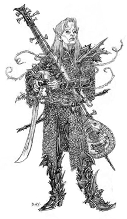

El Umbral de Arcadia
Eliseo ap Liam: 2003 - 2008
Eliseo ap Liam: 2003 - 2008
Nosotros
somos los auténticos hijos de las Nieblas y los herederos de la
Creación. Si el hombre fue hecho a imagen y semejanza de Dios, entonces
nosotros somos Dios.

Los Primonatos reclaman que ellos gobernaron, e incluso crearon, el mundo entero y que solo ellos tienen derecho a dictar las leyes y los decretos de los decretos de los reinos mágicos. Pero sus reclamaciones han sido en gran medida desoídas en la edad moderna ya que existe escasa evidencia que apoye el título que pretenden ostentar. A pesar de todo, los primonatos son, sin lugar a dudas los feéricos más poderosos por su íntima conexión con las energías mágicas que abarcan los Dominios. De hecho, los otros Orígenes se refieren a ellos como "las verdaderas hadas” aunque no tomen en cuenta sus reivindicaciones de superioridad.A pesar de que estos feéricos surgieron de las Nieblas ya completamente formados, ningún primonato ha vuelto a “nacer”, que se recuerde, de ese modo. Los Nuevos primonatos o bien son hijos de dos primonatos, o se han elevado a este rango cuando los primonatos o inanimae Acogen sprites. Los tradicionalistas a veces afirman que los humanos robaron el acto de la concepción a las hadas, en el amanecer de los tiempos, para convertir su pureza en suciedad, mientras que a los liberales les preocupa poco de donde proviene el acto y procuran practicarlo tanto como les es posible, sin cargarlo con ningún estigma social.
La jerarquía de los primonatos es estricta en comparación con las pocas estructuras sociales que existen entre otros tipos de hadas. Incluso un primonato liberal resulta estricto en cuestiones concernientes a su patrimonio y a su estatus social, y la regla más importante en su estrato social es obedecer a los padres y a los ancianos sin cuestionar sus órdenes.
Aquéllos que no tengan esto en cuenta generalmente son tildados de rebeldes y poco respetuosos y de no tener esperanza alguna de convertirse en un verdadero siervo de la Corte. Dichas hadas muchas veces tienen que esperar durante un tiempo extremadamente largo antes de poder pedir su Bautizo de forma efectiva. La mayor parte de los Primonatos aprenden a manejar la presión que conlleva comportarse bien y proteger el honor de su familia por encima de sus propias vidas, pero otros cejan pronto en el empeño y acaban como hadas del Solsticio. La mayoría de los primonatos pasan su Acogida estudiando los Dominios y el conocimiento mágico, las artes de la guerra y de la política, las del liderazgo y las leyes feéricas, así como los misterios de la humanidad, para obtener una rudimentaria perspectiva del mundo. Entre las familias liberales, los primonatos reciben tutela por parte de profesores de cualquiera de los tres Orígenes, pero los tradicionalistas evitan esto para proteger a los más jóvenes de visiones del mundo poco saludables desde el punto de vista moral y ético.
Los cambios que la humanidad experimentó durante los Años Sombríos causaron una terrible conmoción entre los primonatos. Los humanos eran mucho más autosuficientes e increíblemente más poderosos de lo que habían sido en el pasado. Incluso su población había aumentado más de lo que nunca hubieran imaginado. Se sabe que una pequeña expedición primonata se aventuró en el mundo poco después del comienzo de la Tregua del Juramento, pero jamás volvió. Hay quien dice que sus miembros se prendieron fuego y se quemaron hasta la muerte, otros aseguran que se deshicieron como la cera... pero, sea como fuere, ya nunca más existieron. Los primonatos tiemblan de miedo en secreto ante la mera idea de que los humanos pudieran aprender a enfocar sus protecciones basadas en la fe contra las hadas, amenazando con ello la propia existencia de la raza feérica. En su miedo, miran con envidia a los changelings, que son capaces de caminar por las áreas del mundo habitadas por los humanos (lo que, por supuesto, para ellos ya es mucho) sin temor alguno.
A pesar de todo, los primonatos no pueden evitar sentirse a la vez atemorizados y atraídos por el talento de la humanidad en lo que a arquitectura y arte se refiere. Cuando dejan sus dominios sin ningún propósito específico en mente, viajan a localizaciones en las que la más impresionante de las arquitecturas llena el paisaje. Desafortunadamente, no resulta sencillo ser primonato y moverse en un ambiente mortal, ya que ellos son los más vulnerables a los Ecos de todos los feéricos.
Semblante: Los primonatos son, en su apariencia, el horror o el asombro hechos cuerpo. Van desde las criaturas salidas de las más oscuras y perversas pesadillas hasta los ángeles más amables y glamourosos. Aunque los primonatos sean generalmente humanoides (sin olvidar a otras criaturas feéricas más extrañas como los dragones y otros monstruos que también son consideradas técnicamente primonatos) su patrimonio feérico suele resultar obvio a los observadores más avezados. Un primonato puede presentar ojos u orejas de forma extraña, una coloración especial en la piel, dientes o rasgos faciales desproporcionados o algo incluso más raro, como podría ser una cola. Los que están mas en armonía con las Nieblas, presentan cambios incluso mayores, desarrollando cuernos, colmillos, garras o piel verrugosa o acorazada, o ser más grandes o más pequeños que los parámetros humanos más evidentes. Pero no todos los primonatos son tan inhumanos. Algunos son tan bellos que mirarlos deja mudos o vuelve locos a los humanos, y otros pueden hacer brotar lágrimas del corazón mortal con unas simples palabras bien escogidas. En ocasiones las Nieblas interactúan con el mundo de otros modos: Circulan historias entre los mortales sobre doncellas cuyo pelo chorrea oro... o sobre monstruosas brujas que escupen ranas cuando hablan.
Los primonatos no tienen posibilidad de asumir forma humana, y sólo son capaces de disfrazarse usando los Dominios o permitiendo a las Nieblas cubrirles. Antes de adoptar otros disfraces, los primonatos con frecuencia raptan a mortales para moldearse tomándolos como modelos. Tienden a ver este acto como simple medida de seguridad para no ser descubiertos, pero el hecho tiene efectos más profundos en los seres queridos de la víctima que se encuentran a su regreso con un hombre (o una mujer) muy cambiados.
Derecho de nacimiento: A causa de su íntima conexión con los poderes de los Dominios, las hadas primonatas tienen una mayor facilidad para llevar a cabo Desatares. Estos jugadores sólo tendrán que tirar tres dados de Desatar, en lugar de cinco.
Debilidad: La íntima conexión con el mundo feérico vuelve a los primonatos extremadamente sensible a los Ecos en los reinos humanos. Todos los ecos con los que un primonato se encuentre serán tratados inmediatamente como si fueran de un rango mayor.
Nieblas Inicial: 4
Tejido Inicial: 2
Dominios Inicial:3
Aportado por Eliseo ap Liam